3DAR · Buenos Aires — Immersive experience
Opi
and the
Quiet Ones
An immersive VR experience about the solitudes we never talk about.
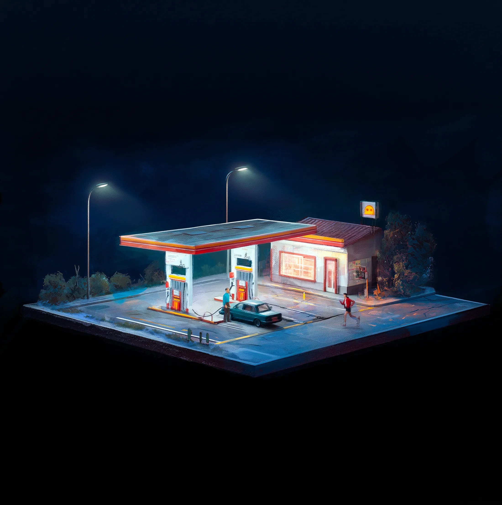
3DAR · Buenos Aires — Immersive experience
An immersive VR experience about the solitudes we never talk about.
Jorge Tereso · Fernando Maldonado · Federico Carlini
01 — Where we come from
Fast Company — 2nd most innovative company in Latin America, top 50 worldwide (2023).
We landed here.
02 — The hook
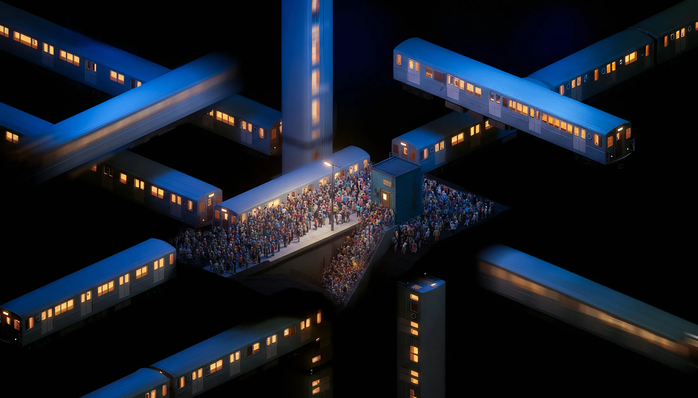
It's older than every device we blame for it. It sat in kitchens, in waiting rooms, on the last train — long before anything glowed.
We've turned solitude into a defect to be fixed. It's also the only room where anyone ever met themselves — and the only way company is ever worth anything.
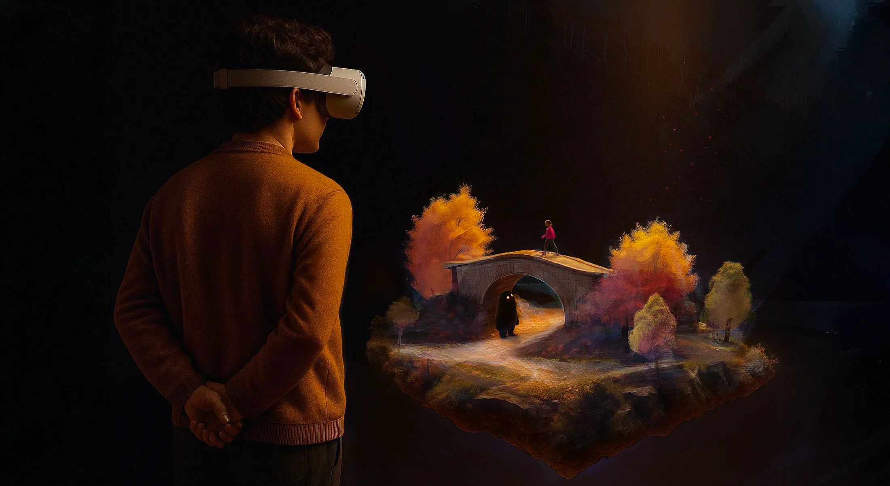
03 — The experience
A 30-minute journey through silence. You don't watch these lives — you lean into them, the way you'd look into a lit window from the street.
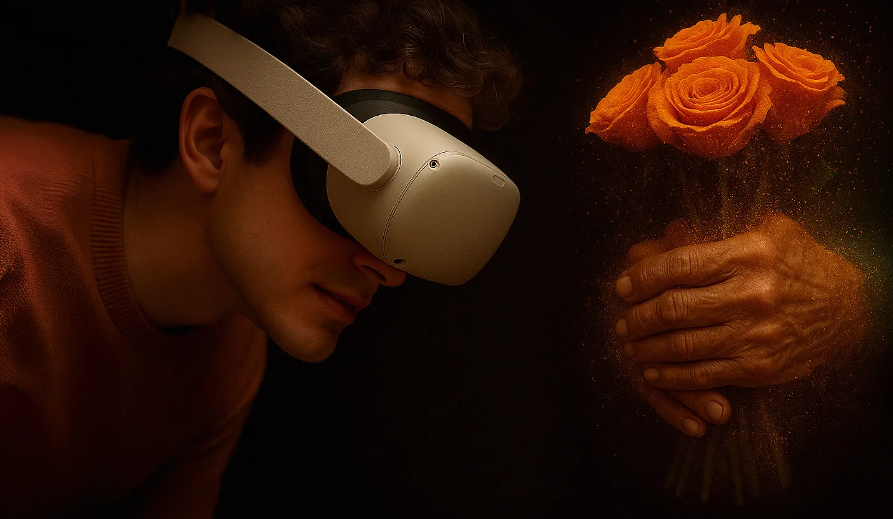
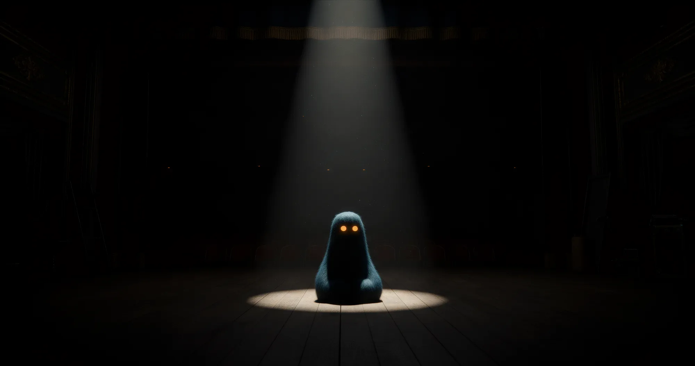
04 — Our guide
He only exists while someone is alone. His presence is heavy, like a wet coat on your shoulders.
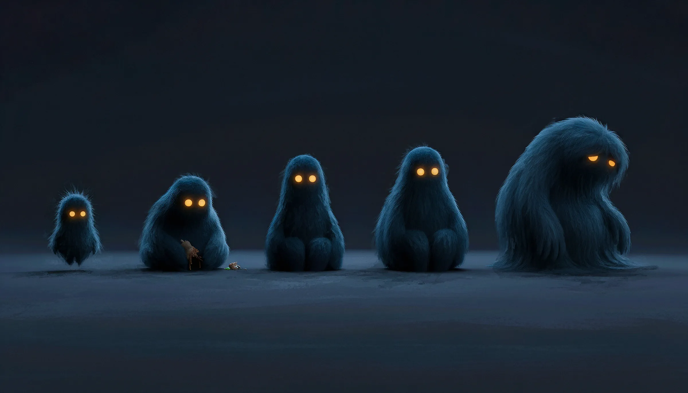
He doesn't want you to be alone. He is freed when you're not. · We'll show you four of these lives. There are many more.
05 — The story
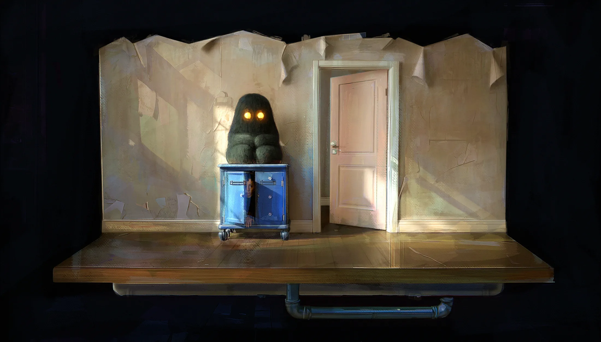

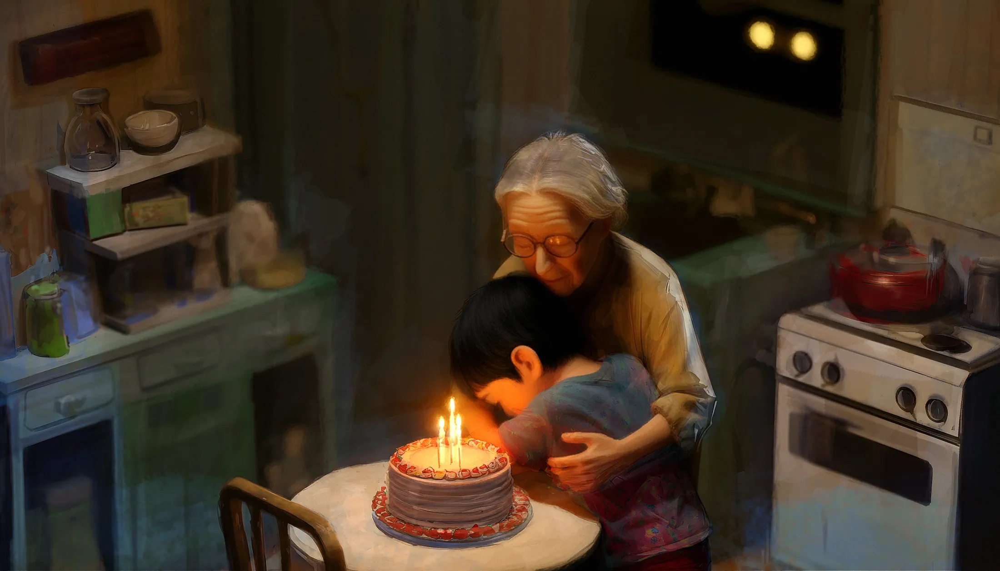
Simón is Seraphine's grandson. Luis meets Lucy at a gas station. Zulma crosses no one — she's the one who teaches.
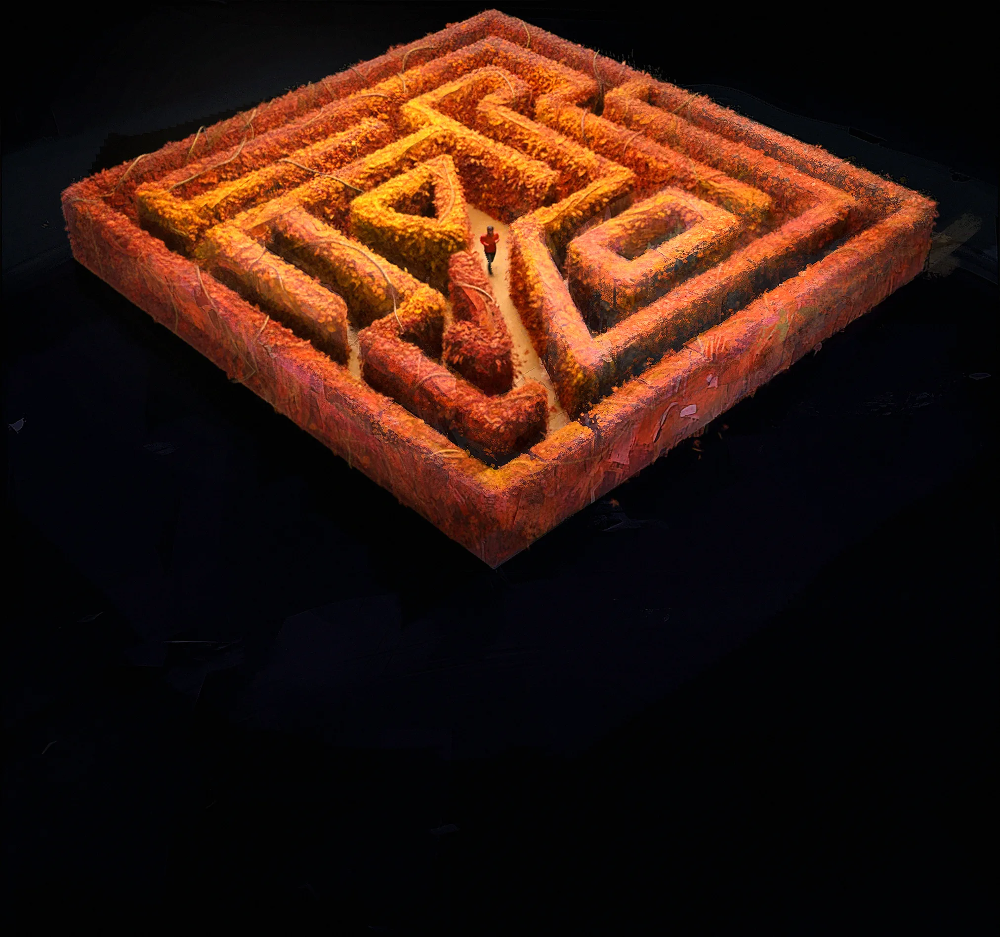
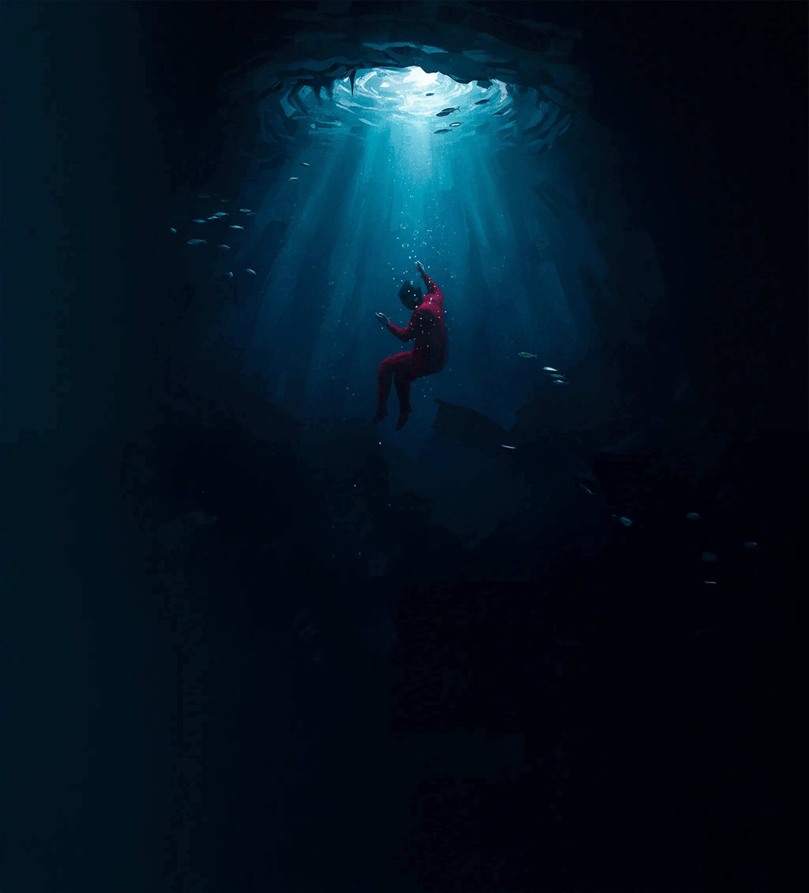
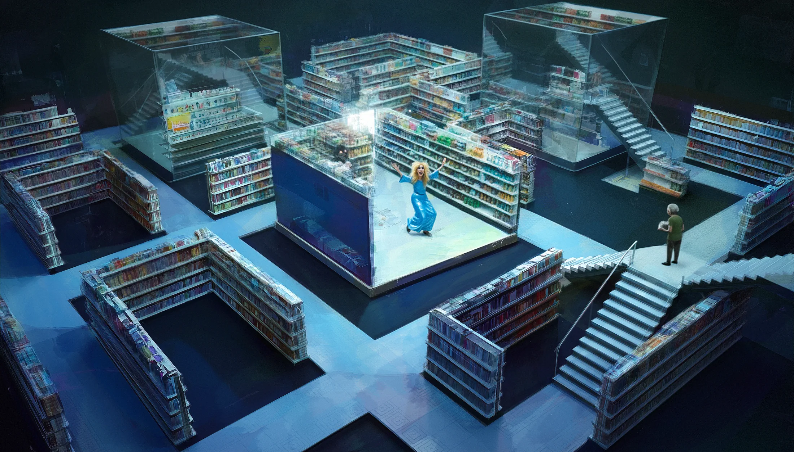
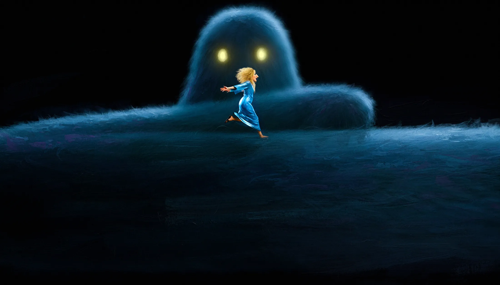
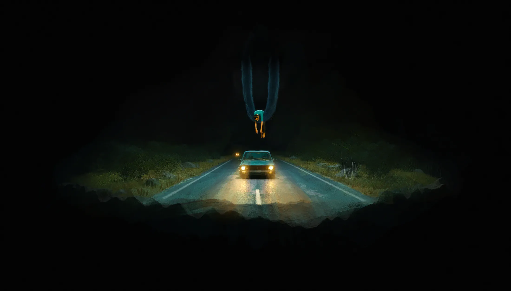
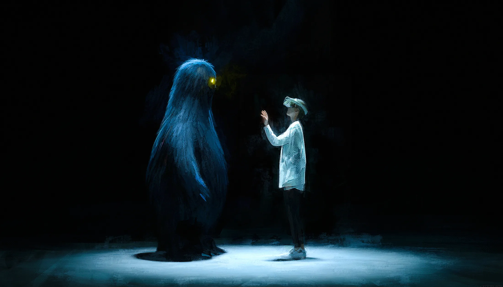
What it's for
Not a warning about isolation. An argument for solitude — the place that teaches you something, and the only reason company means anything at all.
It's the only technology in the world that asks you to be alone — and everyone treats that as a defect to fix.
We treat it as the reason.”
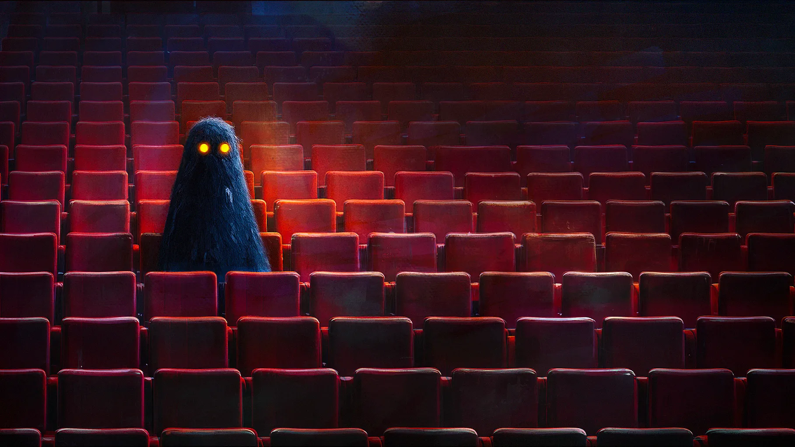
06 — Scalability / IP
Same five silences. One city, one night that lasts a year. In the VR piece Opi visits; in the film he belongs to something. We meet the others like him — many Opis, assigned, worn down, each carrying a solitude that feeds them.
The rule is simple, and it's the whole drama: an Opi exists only while someone is alone. Every loneliness he ends costs him a reason to exist. There is an older one who learned that long ago and now protects loneliness instead of ending it. Opi intervenes anyway — the cake, the dance, the rain — and pays for it.
The scenes don't change. The angle does.
07 — Status
Phase 1 delivers: 2 functional scenes · script V1 · validated art direction.
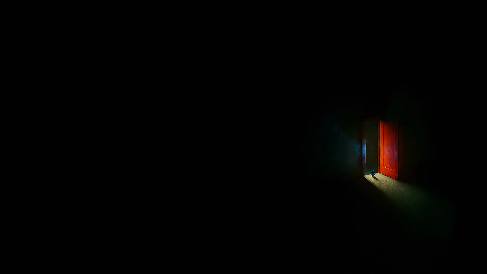
08 — What we're looking for
Thank you
3DAR
Germán Heller · Executive Producer · g@3dar.com · Buenos Aires
← → to move · N notes · T timer · O overview